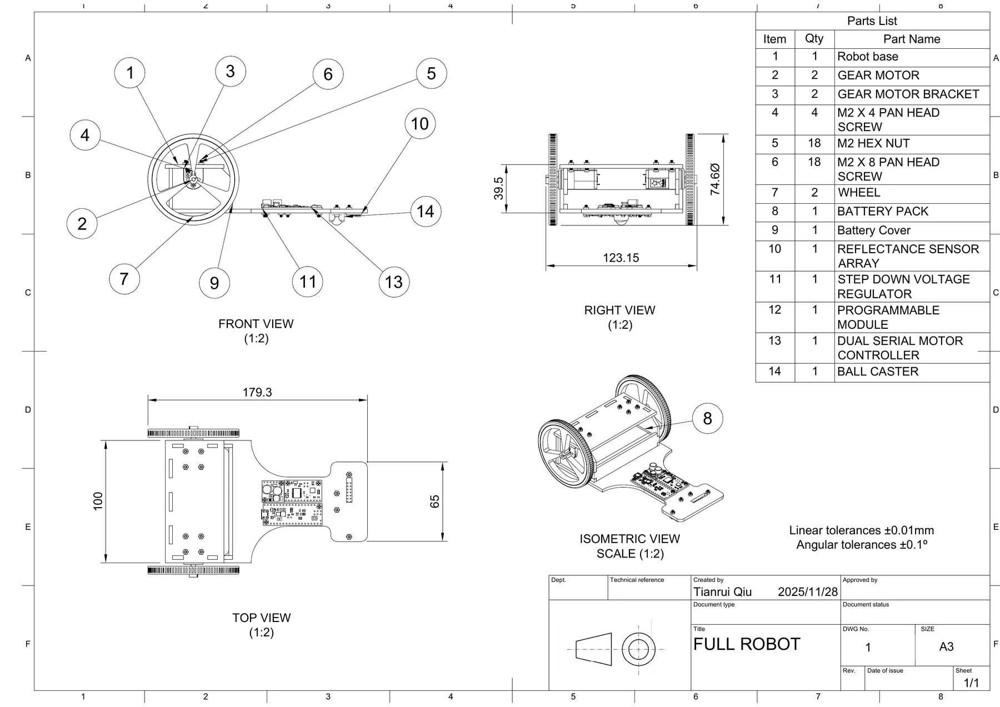
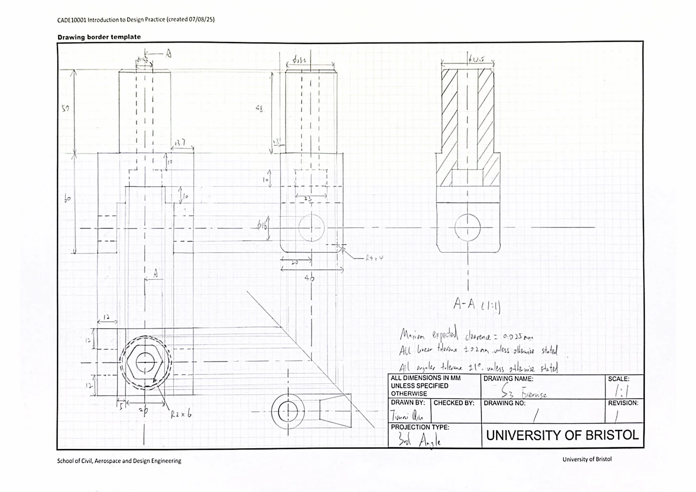
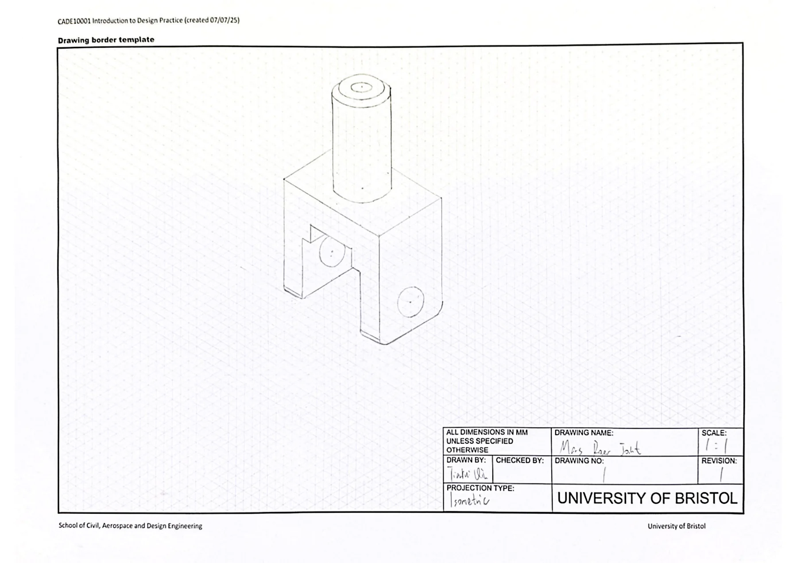
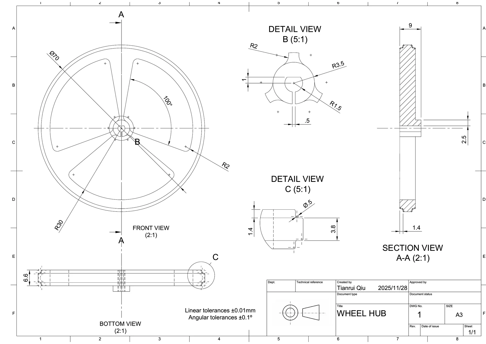

Project 01
Design Practice,
Engineered.
A first-year University of Bristol design portfolio showing the transition from hand-drawn engineering construction to CAD modelling and software-generated technical drawings.

Software drawing output: full robot assembly, parts list, dimensions, and orthographic/isometric views.

Hand construction drawing: orthographic views, dimensions, tolerances, section view, and drawing border.
Hand-built orthographic logic.
Page 4 records the manual engineering drawing stage: center lines, hidden details, section view A-A, dimensioning, tolerances, and a complete drawing border.
From views to volume.
Page 5 converts the part into an isometric representation, helping connect 2D projection rules with the physical 3D object.
CAD geometry becomes documentation.
Page 7 shows a software-generated wheel hub drawing with front, bottom, section, and detail views, moving from sketch practice to controlled CAD output.
System-level assembly communication.
Page 8 presents the full robot drawing with front, right, top, and isometric views plus a parts list, showing how CAD output supports assembly communication.
Selected sheets


The Fusion 360 project file is still included as a downloadable source package. I also converted the exported OBJ + MTL assembly into a web-ready GLB, so the robot can be inspected directly in the browser.
What I Practised
- Mechanical drawing conventions and dimensioning.
- CAD modelling workflow in Fusion 360.
- Design documentation and portfolio presentation.
My Contribution
I created CAD models, prepared drawing outputs, selected portfolio pages, and organised the narrative so the design process could be reviewed clearly.
Next Step
The next upgrade can add exploded-view annotations, part callouts, or a guided camera path through the assembly.